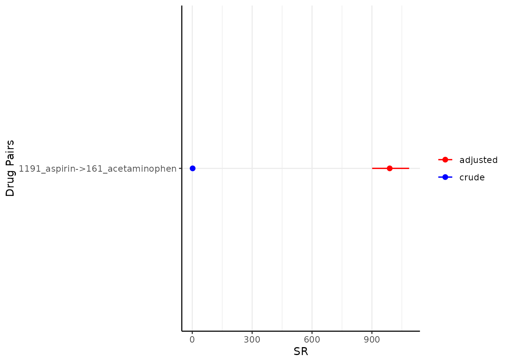
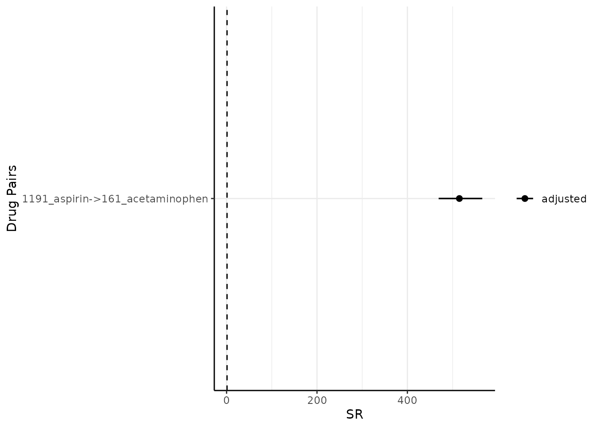
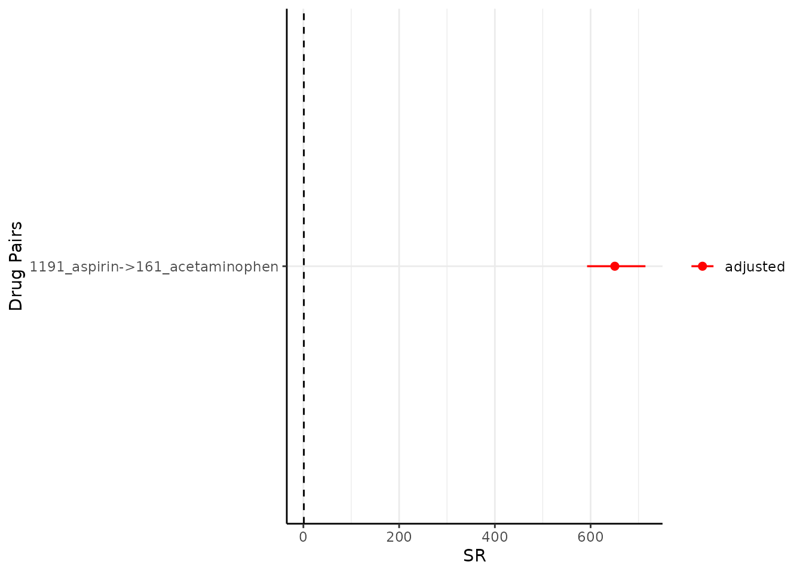

Step 3. Visualise the sequence ratios
Source:vignettes/a04_Visualise_sequence_ratios.Rmd
a04_Visualise_sequence_ratios.RmdIntroduction
In this vignette we will explore the functionality and arguments of a set of functions that will help us to understand and visualise the sequence ratio results. In particular, we will delve into the following functions:
-
tableSequenceRatios(): to generate a table summarising the results. -
plotSequenceRatios(): to plot the sequence ratios.
This function builds-up on previous functions, such as
generateSequenceCohortSet() and
summariseSequenceRatios() function (explained in detail in
previous vignettes: Step 1. Generate a sequence cohort
and Step 2. Obtain the sequence ratios respectively).
Hence, we will pick up the explanation from where we left off in the
previous vignette.
Recall we had the table intersect in the cdm reference and that the results of sequence ratio could produced as follows (Step 2. Obtain the sequence ratios):
result <- summariseSequenceRatios(cohort = cdm$intersect)Table output of the sequence ratio results
The function tableSequenceRatios inputs the result from
summariseSequenceRatios, the default outputs a gt
table.
tableSequenceRatios(result = result)Modify type
Instead of a gt table, the user may also want to put the sequence ratio results in a flex table format (the rest of the arguments that we saw for a gt table also applies here):
tableSequenceRatios(result = result,
type = "flextable")Or a tibble:
tableSequenceRatios(result = result,
type = "tibble")Plot output of the sequence ratio results
Similarly, we also have plotSequenceRatios() to
visualise the results.
plotSequenceRatios(result = result)
By default, it plots both the adjusted sequence ratios (and its CIs) and crude sequence ratios (and its CIs). One may wish to only plot adjusted one like so (note since only adjusted is plotted, only one colour needs to be specified):
Modify onlyASR and colours
plotSequenceRatios(result = result,
onlyASR = T,
colours = "black")
One could change the colour like so:
plotSequenceRatios(result = result,
onlyASR = T,
colours = "red")
CDMConnector::cdmDisconnect(cdm = cdm)